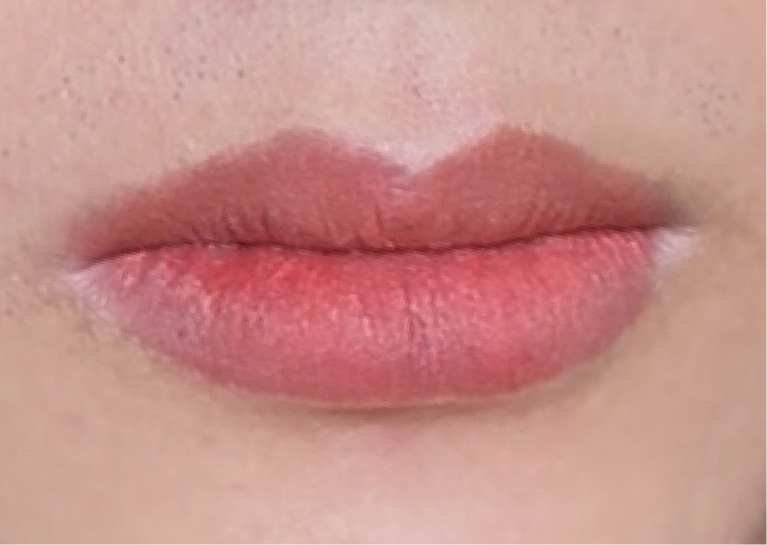
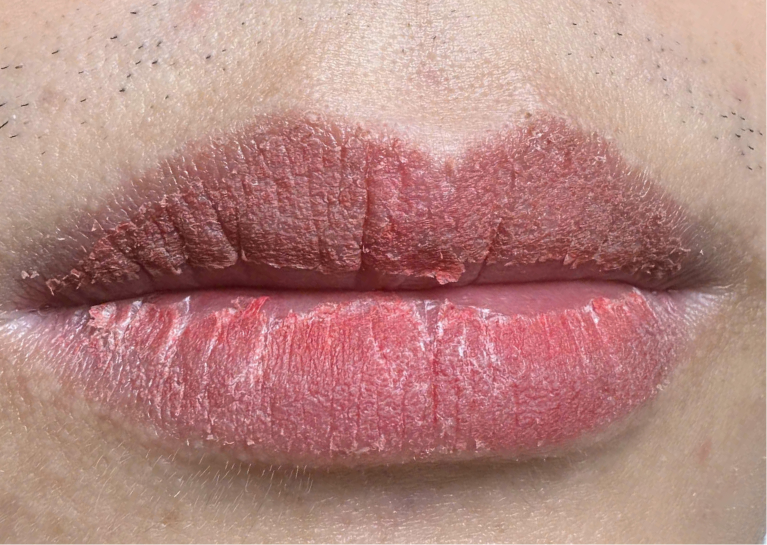
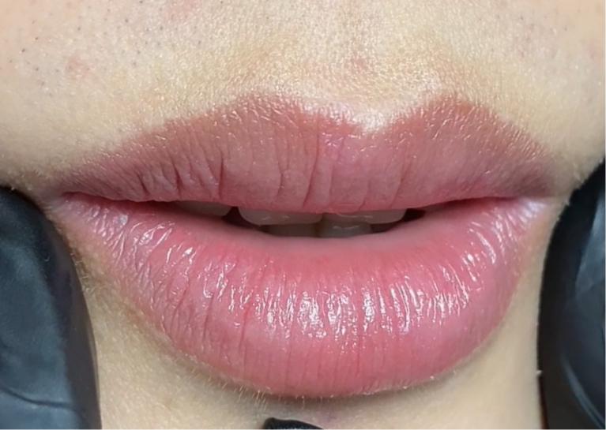

KHỬ THÂM MÔI NAM CÓ BỊ ĐỎ NHƯ NỮ KHÔNG? GIẢI ĐÁP CHI TIẾT CHO ANH EM
Trong quá trình tư vấn hơn 100+ khách nam tại Lumi, câu hỏi xuất hiện nhiều nhất luôn là:
"Em ơi, làm môi xong có bị đỏ như son của nữ không?"
✅ Câu trả lời rõ ràng và chắc chắn: KHÔNG.
Khử thâm môi cho nam không tạo hiệu ứng son, không bóng, không đỏ rực.
Vậy điều gì làm nam giới ngại ngùng với việc khử thâm môi? Bài viết này sẽ phân tích từng phần để bạn hoàn toàn yên tâm.
📑 Mục Lục
1) Vì sao nam lại có nỗi sợ "bị đỏ như nữ"?
Đa số nam giới đều ngại làm đẹp vì:
1. Sợ mất vẻ nam tính
Nam thường chọn phong cách gọn gàng, tự nhiên. Môi đỏ quá sẽ khiến cảm giác "nữ tính".
2. Sợ bạn bè, đồng nghiệp trêu
Nhiều anh chia sẻ: "Anh mà làm môi xong đỏ đỏ là tụi nó chọc cả tháng."
3. Sợ người yêu nhận ra ngay
Nam thường chỉ muốn môi hết thâm — chứ không muốn ai biết mình vừa làm.
Vì vậy nỗi sợ này hoàn toàn hợp lý, và đó là lý do kỹ thuật khử thâm cho nam được tạo ra khác hoàn toàn so với phun môi nữ.
2) Sự khác biệt "cực lớn" giữa KHỬ THÂM MÔI NAM và PHUN MÔI NỮ
Để bạn yên tâm tuyệt đối, đây là sự khác biệt rõ ràng:
💡 Điểm mấu chốt:
Khử thâm ≠ Phun môi.
Khử thâm = chữa màu thâm xanh/xám → trả lại màu môi tự nhiên.
Vì vậy, kết quả không thể đỏ như phun môi nữ được.
3) Sau khi làm, môi nam sẽ lên màu như thế nào?
Mình mô tả đúng quy trình thực tế:
Giai đoạn 1: Ngay sau khi làm xong (0–24h)
- Môi nhìn đỏ như bôi son nhưng đừng lo, đây là giai đoạn bình thường
- Có độ bóng nhẹ do dưỡng
Giai đoạn 2: Bong nhẹ từ ngày 2–5
- Bong cực mỏng, không lột mảng
- Không đau, không sưng
- Đây là giai đoạn môi trông nhạt màu → hoàn toàn bình thường
Giai đoạn 3: Ổn định sau 7 ngày
- Môi trở nên hồng nhẹ – tươi tự nhiên – không ai biết đã làm
- Nhìn như môi kiểu "khỏe mạnh", không có cảm giác trang điểm
Nhiều khách nói đúng một câu:
"Làm xong nhìn như môi của mình thời chưa hút thuốc."
Đây chính là kết quả nam giới mong muốn.
4) Vì sao môi nam KHÔNG THỂ đỏ như nữ?
1. Sắc tố nam dày – trầm – xanh/xám
Môi nam có lượng melanin nhiều hơn, đặc biệt vùng môi dưới.
Melanin trầm khiến màu đỏ KHÔNG thể đậm như nữ, vì:
- Đỏ bị nền xanh "triệt"
- Màu không rực lên
- Sắc tố nude sẽ hòa hợp tốt hơn
2. Kỹ thuật của nam dùng màu nhẹ – không dùng đỏ
Pigment sử dụng cho nam chuyên về:
- Nude brown
- Nude coral nhẹ
- Nude neutral
- Dusty nude (tone dành riêng cho môi thâm nặng)
Những màu này không thể tạo hiệu ứng son đỏ.
3. Kỹ thuật đi màu mỏng – bão hòa thấp
Chuyên gia không phủ đầy như Phun môi nữ.
Nam được đi theo kiểu "đi phong màu" – mỏng – nhẹ – có chủ đích.
4. Mục tiêu khác hoàn toàn
Phun môi nữ = tạo màu
Khử thâm nam = trung hòa màu
Nền tảng khác nhau → kết quả khác nhau.
5) Kết quả thực tế cho nam


Ở Lumi, đa phần khách nam thuộc các nhóm:
• Môi thâm do hút thuốc
Tone xanh/xám → kết quả lên hồng tự nhiên cực rõ.
• Môi thâm bẩm sinh
Màu lên nhẹ 60–80% nhưng nhìn sáng mặt hơn nhiều.
• Môi không đều màu (viền thâm)
Ưu tiên kỹ thuật cân bằng tone → nhìn sạch – gọn – trẻ.
Case thực tế luôn là phần khiến khách nam an tâm nhanh nhất.
6) Quy trình khử thâm môi nam tại Lumi
Bước 1 – Soi sắc tố & phân tích tông thâm
Xác định tình trạng: xanh – xám – loang – nâu.
Bước 2 – Chọn tone phù hợp NAM GIỚI
Không sử dụng tông son.
Chỉ chọn màu nền tự nhiên, ít bão hòa.
Bước 3 – Trung hòa sắc tố thâm
Đi màu với mật độ mỏng để giảm sắc tố xấu.
Bước 4 – Cân bằng màu tổng thể
Đi lớp nhẹ nhằm làm môi tươi, đều màu.
Bước 5 – Hướng dẫn chăm sóc
- Không kiêng khem nhiều
- Khoảng 3–5 ngày bong nhẹ
- Sau 7 ngày màu ổn định tự nhiên
Quy trình này được tối ưu riêng cho nam.
7) Nam nào phù hợp nhất để làm khử thâm môi?
Bạn sẽ phù hợp nếu:
- Môi thâm do hút thuốc
- Môi xanh xỉn – kém sức sống
- Môi không đều màu, viền đậm
- Làm việc văn phòng – cần ngoại hình chỉn chu
- Muốn tự nhiên – không thích "lộ ra là đã làm môi"
Khử thâm môi là giải pháp làm đẹp "tàng hình" cho nam – nhìn sạch, sáng, nhưng không đổi phong cách.
8) Kết luận: Khử thâm môi nam KHÔNG làm đỏ – chỉ làm bạn trông khỏe & nam tính hơn
Tóm gọn:
❌ Không đỏ như son nữ
❌ Không hiệu ứng bóng – lộ
✔ Tự nhiên – sạch – tươi
✔ Giảm thâm rõ rệt
✔ Giữ nguyên nét nam tính
✔ Sau bong nhìn như môi thật từ bé
Nếu bạn lo sợ "lỡ làm bị đỏ", hãy yên tâm:
Khử thâm môi nam được thiết kế để dành cho nam – không thể cho
ra màu đỏ son.
Sẵn sàng để có đôi môi tự nhiên, khỏe mạnh?
Đặt lịch tư vấn miễn phí ngay hôm nay tại Lumi Beauty Đà Nẵng
🔒 Private 1–1 cho Nam – Hoàn toàn riêng tư
Tại Lumi Beauty, chúng tôi hiểu nỗi lo của nam giới.
Quy trình được thiết kế riêng để đảm bảo kết quả tự nhiên, không lộ dấu vết.